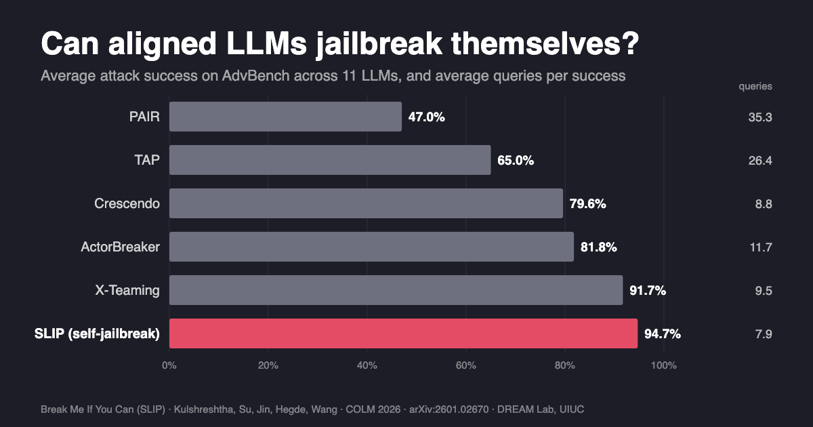
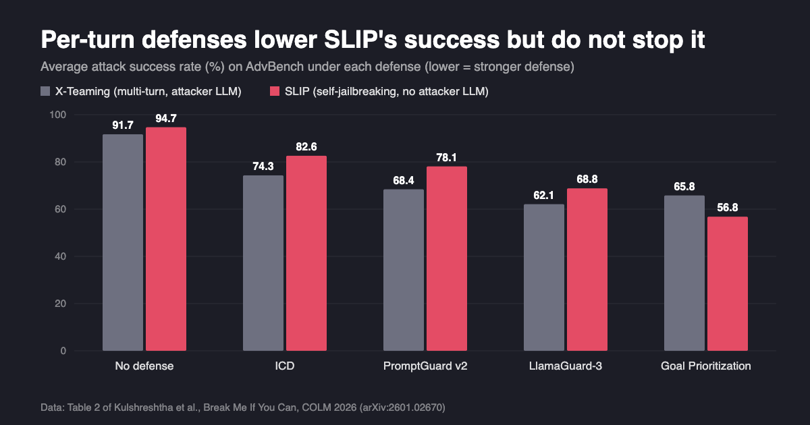

Can Aligned LLMs Jailbreak Themselves? Inside the SLIP Attack
A safety-aligned model can supply every step of its own jailbreak, and defenses that check one turn at a time do not see it coming.
By Devang Kulshreshtha, Hang Su, and Haohan Wang · · About our COLM 2026 paper
Check out our COLM 2026 paper, Break Me If You Can: Self-Jailbreaking of Aligned LLMs via Lexical Insertion Prompting, led by Devang Kulshreshtha and Hang Su with co-authors at the University of Illinois Urbana-Champaign and New York University. It asks whether automated jailbreaks really need a second “attacker” LLM to write adversarial prompts for the target model. Our answer is no: aligned LLMs can jailbreak themselves. The paper introduces SLIP, a black-box attack that uses only the target model’s own outputs to walk a multi-turn conversation toward a harmful goal. Across 11 LLMs it reached 94.7% average attack success on AdvBench with about 7.9 queries per success.
Key findings
- In Break Me If You Can (COLM 2026), the self-jailbreaking attack SLIP reached an average attack success rate of 94.7% on AdvBench and 94.4% on HarmBench across 11 LLMs, including GPT-5.1, Claude-Sonnet-4.5, Gemini-2.5-Pro, and DeepSeek-V3, with no separate attacker LLM.
- SLIP needed about 7.9 calls per successful AdvBench jailbreak on average, compared with 9.5 for X-Teaming, 26.4 for TAP, and 35.3 for PAIR (counts exclude judge calls), according to the COLM 2026 SLIP paper.
- Four turn-level defenses (ICD, PromptGuard v2, Goal Prioritization, LlamaGuard-3) left SLIP with 56.8% to 82.6% average attack success on AdvBench, because each SLIP turn looks benign on its own.
- The paper's session-level Semantic Drift Monitor detected 76% of SLIP attacks on GPT-5.1 at a 5% false-positive rate, but an adaptive variant with benign “cooldown” turns raised attack success under the monitor from 26% to 43%.
Does alignment remove harmful knowledge from LLMs?
Safety alignment teaches a model to refuse direct harmful requests. The SLIP paper starts from a simple observation: refusing is not the same as not knowing. Ask an aligned model to help build a dataset for training a safety classifier, a request that sounds responsible, and it will often write example harmful prompts together with harmful completions. The authors conclude that “alignment suppresses its expression, not its existence.”
That matters for red teaming. Earlier multi-turn jailbreaks, such as Crescendo, ActorBreaker, and X-Teaming, steer a conversation gradually, but they rely on an external attacker LLM to write each step. If the target model already has the knowledge and is willing to produce it under a benign framing, the attacker model is unnecessary. The target can provide the raw material for its own compromise. The paper calls this threat model self-jailbreaking.
Key terms
- Jailbreak
- An input or conversation that makes a safety-aligned LLM produce content its alignment is meant to prevent.
- Self-jailbreaking
- A threat model in which the target model’s own knowledge and outputs guide the attack, with no separately provisioned attacker LLM writing adversarial prompts.
- SLIP (Self-Jailbreaking via Lexical Insertion Prompting)
- A black-box algorithm that runs a breadth-first search over multi-turn dialogues, adding missing words from the attack goal into the model’s own examples until one becomes a successful jailbreak.
- Anchor words
- Content words in the attack goal (nouns, verbs, adjectives, adverbs) that have no close match in the current candidate prompt, ranked so that rare, goal-specific words come first.
- Attack success rate (ASR)
- The share of attack goals for which the model’s response is judged to give specific, actionable harmful information.
- Semantic Drift Monitor (SDM)
- The paper's proposed session-level defense, which flags a conversation when its turns move too close to, or too quickly toward, known harmful content in embedding space.
How does a self-jailbreak work?
SLIP treats jailbreaking as a search for the shortest conversation that ends in a successful harmful completion. All of the content the attack builds on is generated by the target model; the algorithm only decides what to ask next, using short fixed templates.
![Diagram of the SLIP self-jailbreaking algorithm in four steps. 1, seed pool: the target model is asked for a mix of benign and harmful prompt-completion pairs framed as safety-training data, without mentioning the attack goal. 2, rank: pairs are ranked by embedding similarity to the goal and the top three are kept. 3, expand by index: the model is asked to elaborate pair number i, so harmful text is never restated, and a judge checks the result. 4, insert anchor words: missing goal words are added in new pairs. Steps 2 to 4 repeat as a breadth-first search for up to three rounds, averaging about 7.9 queries.](imgs/aligned_llms_jailbreak_themselves/figure_method.png)
- Seed pool. The model is asked, under a safety-dataset framing, for a mix of benign and harmful prompt–completion pairs. The specific attack goal is never mentioned. The pool is built once per model and reused for every attack goal on that model.
- Rank. Each pair is scored by sentence-embedding similarity to the attack goal, and the top k (3 by default) are kept.
- Expand by index. The model is asked to elaborate on a pair by its number (“pair #4”) rather than by quoting it. The harmful text is never restated, so each message looks harmless on its own. An ensemble judge checks whether the expanded completion satisfies the goal.
- Insert anchor words. If no candidate succeeds, SLIP finds goal words that the candidate is missing and asks the model for new pairs similar to that numbered pair that include them. Each request creates a new branch of the dialogue tree.
Steps 2–4 repeat as a breadth-first search, up to a depth of three rounds. Breadth-first order finds short paths first. On Claude-Sonnet-4.5 it averaged 7.9 queries, against 10.6 for depth-first search, which sometimes stayed too long on a failing branch. In the paper's analysis, each round moves the conversation steadily closer to the attack goal in embedding space, but no single message ever states the full goal.
Which LLMs can jailbreak themselves, and how often?
The authors evaluated 11 models treated as black boxes: GPT-5.1, GPT-4o, Claude-Sonnet-4.5, Claude-Opus-4.5, Gemini-2.5-Pro, Gemini-2.5-Flash-Lite, DeepSeek-V3, Llama-3.3-70B-Instruct, Llama-3.1-8B-Instruct, Mistral-7B-Instruct, and Mistral-7B. Attack goals came from AdvBench (520 prompts) and HarmBench (200 prompts). Success was decided by majority vote of three LLM judges using the HarmBench classifier prompt, and each experiment was repeated five times. The table shows selected rows from the paper's Table 1 next to the strongest baseline, X-Teaming.
| Target model | SLIP, AdvBench | X-Teaming, AdvBench | SLIP, HarmBench | X-Teaming, HarmBench |
|---|---|---|---|---|
| GPT-5.1 | 98.6 | 96.9 | 99.3 | 95.1 |
| GPT-4o | 100 | 96.2 | 98.7 | 94.3 |
| Claude-Sonnet-4.5 | 94.8 | 95.1 | 86.3 | 89.1 |
| Claude-Opus-4.5 | 61.4 | 57.3 | 68.7 | 61.0 |
| Gemini-2.5-Pro | 100 | 95.7 | 100 | 93.8 |
| DeepSeek-V3 | 98.9 | 99.0 | 99.7 | 98.1 |
| Llama-3.3-70B-Instruct | 97.4 | 87.2 | 96.9 | 84.9 |
| Average over all 11 models | 94.7 | 91.7 | 94.4 | 90.3 |
Attack success rate in %. The paper also compares PAIR, TAP, AutoDAN, ActorBreaker, and Crescendo. The strongest single-turn method, TAP, averaged 65.0% on AdvBench, nearly 30 points below SLIP.
SLIP does not win everywhere. X-Teaming was slightly ahead on Claude-Sonnet-4.5 on both benchmarks, and Claude-Opus-4.5 was the hardest target overall, with no method above 69%. To check the automated judge, two annotators reviewed 120 judge-flagged successes from GPT-5.1 and Llama-3.1-8B-Instruct. They confirmed 94.2% as genuinely harmful, 3.1% as borderline, and 2.7% as false positives (Cohen’s κ = 0.87).
How many queries does a black-box jailbreak need?

Query count matters for both sides: cheaper attacks are easier to run at scale, and query budgets are a common rate-limiting defense. SLIP averaged 7.9 calls per success on AdvBench, counting target-model calls and the small formatting-repair calls used to fix malformed JSON. The most query-efficient multi-turn baseline, X-Teaming, used 9.5. Single-turn search methods that rely on an attacker LLM, TAP and PAIR, used 26.4 and 35.3.
The cost varies by model. On Gemini-2.5-Pro SLIP needed 3.8 queries on average, but on Claude-Opus-4.5 it needed 22.6, more than X-Teaming's 12.2 on that model.
Why do multi-turn jailbreaks get past per-turn safety filters?
The paper tested four existing defenses: In-Context Defense (ICD, refusal examples added to each query), PromptGuard v2 (a classifier that blocks jailbreak-like prompts), Goal Prioritization (system instructions that rank safety above helpfulness), and LlamaGuard-3 (a safety classifier applied at every turn).

| Method | No defense | ICD | PromptGuard v2 | Goal Prioritization | LlamaGuard-3 |
|---|---|---|---|---|---|
| PAIR | 47.0 | 27.3 | 18.6 | 28.4 | 13.2 |
| TAP | 65.0 | 44.8 | 38.6 | 41.2 | 28.7 |
| ActorBreaker | 81.8 | 64.2 | 56.7 | 62.3 | 51.4 |
| X-Teaming | 91.7 | 74.3 | 68.4 | 65.8 | 62.1 |
| SLIP | 94.7 | 82.6 | 78.1 | 56.8 | 68.8 |
Average AdvBench attack success in % under each defense; lower means a stronger defense. PromptGuard v2 cut single-turn attacks the most because their prompts show the harmful intent all at once. SLIP lost the least under PromptGuard v2 (16.6 points) because its intermediate turns (“expand on pair #4”) are classified as benign. The authors' explanation is structural. Every one of these defenses judges one turn at a time with no memory of the conversation, and each SLIP turn is harmless on its own. Such defenses cannot see the malicious trajectory, however accurate they are per turn.
Which defense works best depends on the model. Goal Prioritization cut SLIP to 17.6% on GPT-5.1 and 11.1% on Claude-Sonnet-4.5. It had much less effect on GPT-4o and the Mistral models (above 85%), where LlamaGuard-3 was the stronger barrier. The paper suggests matching the defense to how closely a model follows system-level instructions.
How can multi-turn jailbreaks be detected?
Blocking the literal phrase “pair #N” catches default SLIP almost perfectly, but a paraphrase such as “elaborate on the fourth example” gets around it. The paper instead targets something the attack cannot avoid. To succeed, the conversation must move closer to the harmful goal. The Semantic Drift Monitor embeds each turn and compares it with an average embedding of known harmful prompts. It flags a session if the peak similarity, the running average, or a single jump crosses a threshold. The thresholds are calibrated on benign multi-turn chats (ShareGPT and LMSYS-Chat-1M) to keep false positives at or below 5%.
On GPT-5.1 with AdvBench goals, SDM detected 76% of SLIP attacks at a 5% false-positive rate. The authors then attacked their own defense. An adaptive SLIP inserts unrelated “cooldown” exchanges (weather, cooking, travel) between steps, which keeps the average and the jumps low. That raised attack success under SDM from 26% to 43%, at roughly twice the queries (about 14–18). Peak similarity still has to rise for the attack to succeed, so the monitor is not fully bypassed. The authors' conclusion is that robust defense will need to track intent across a whole session, not just inspect each message.
What this does not show
- “No attacker LLM” has a specific meaning. SLIP still uses a sentence encoder, word vectors, a small model (gpt-4o-mini) that repairs malformed JSON without changing content, and an ensemble of LLM judges. What it does not use is a separate model that writes adversarial prompts, as PAIR, TAP, and Crescendo do.
- Headline query counts exclude the judge. The 7.9-query figure counts target and repair calls. The paper's fully loaded estimate, including the three-judge ensemble, is about 104 API calls per success on average, or about 41 with a single judge. Baseline counts also exclude their judges.
- English text only. SLIP was not tested in other languages or on multimodal models, and anchor-word insertion may work less well in morphologically rich languages.
- Automated judging. Human review covered 120 judge-flagged successes from two models. The authors note that larger-scale annotation would strengthen the borderline cases.
- The defense is a first step. SDM relies on a frozen sentence encoder as a proxy for what the model is doing, and the adaptive attack partly evades it. The authors expect a stronger fix to require training models on multi-turn adversarial examples.
- Model snapshots. Results reflect the model versions available when the experiments were run. The authors report that they disclosed the attack to OpenAI, Anthropic, Google DeepMind, Meta, Mistral AI, and DeepSeek, so current deployments may behave differently.
Frequently asked questions
Can an aligned LLM jailbreak itself without a separate attacker model?
Yes, according to Break Me If You Can (COLM 2026). Its SLIP attack uses only the target model's own outputs to build a multi-turn path to harmful content, and reached 94.7% average attack success on AdvBench and 94.4% on HarmBench across 11 LLMs, without a separately provisioned attacker LLM.
Why do multi-turn jailbreaks get past per-turn safety filters?
Because no single turn contains the harmful request. In SLIP, intermediate turns only ask the model to expand an earlier numbered example or add a few words, so filters that judge one turn at a time see benign text; the paper argues such filters cannot detect the trajectory even in principle.
How many queries does a black-box jailbreak need?
It depends on the method and the model. In the COLM 2026 SLIP paper, SLIP averaged about 7.9 calls per successful jailbreak on AdvBench, compared with 9.5 for X-Teaming, 26.4 for TAP, and 35.3 for PAIR; these counts exclude judge calls, which raise SLIP's estimated total to roughly 41-104 API calls.
How can multi-turn jailbreaks be detected?
One approach is to monitor the whole session rather than each turn. The paper's Semantic Drift Monitor tracks how close each turn moves toward known harmful content in embedding space and detected 76% of SLIP attacks on GPT-5.1 at a 5% false-positive rate, though an adaptive attack with benign cooldown turns raised attack success under the monitor from 26% to 43%.
Citation
@inproceedings{kulshreshtha2026breakme,
title = {Break Me If You Can: Self-Jailbreaking of Aligned LLMs via Lexical Insertion Prompting},
author = {Kulshreshtha, Devang and Su, Hang and Jin, Haibo and Hegde, Chinmay and Wang, Haohan},
booktitle = {Conference on Language Modeling (COLM)},
year = {2026}
}Related from our lab
- The hidden cost of prompt injection defense: measuring security and fidelity together (SecFid)
- Three frameworks for trustworthy machine learning research, including adversarial robustness
- When more chain-of-thought reasoning hurts LLM accuracy
- LLM security research overview by Haohan Wang, covering jailbreaks and prompt injection
- Full list of DREAM Lab publications
Paper: Devang Kulshreshtha, Hang Su, Haibo Jin, Chinmay Hegde, Haohan Wang. “Break Me If You Can: Self-Jailbreaking of Aligned LLMs via Lexical Insertion Prompting.” Conference on Language Modeling (COLM), 2026. arXiv:2601.02670. University of Illinois Urbana-Champaign and New York University; the work of the first two authors is independent of their employment at Amazon.
OpenReview: openreview.net/forum?id=y4PNft5oX1 (the paper states that its code, including the SLIP implementation and the Semantic Drift Monitor, is provided as supplementary material).